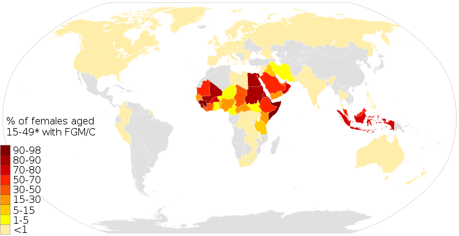
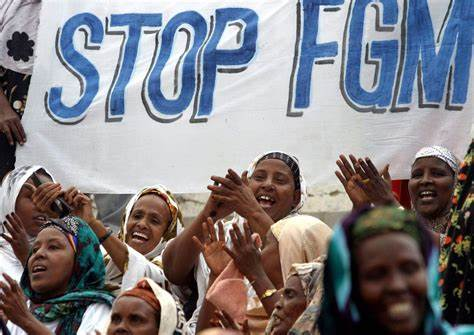
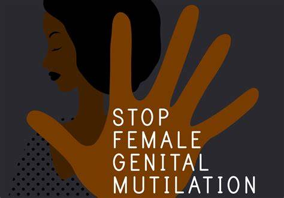

Imagine being held down while you are forced to experience a vital and important organ being ripped from your body,
changing the course of your life forever. This is the reality that over 200 million women and girls go through.
What Is FGM?
So What is FGM?
FGM stands for “Female Genital Mutilation” or female circumcision and is a non-medical procedure performed on usually young female victims to alter or completely remove their genitalia.
FGM is classified under four types: from left to right we can observe that the severity of mutilation increases as noted by the amount of flesh removal (shown in purple).
Most cases (~90%) fall under type 1, otherwise known as a clitoridectomy, which is the partial or complete removal of the external clitoris.
The other 10% of cases falls into type three, known as the infibulation, which is the removal and alteration of the clitoris, labia minoria, and labia majora followed by the sealant of the vaginal opening.
This procedure leaves the victims with only a small hole for menstrual blood and urine and is commonly healed by bounding the victim’s legs together so as to not rip the stitches open (this was the procedure that was most likely performed on Sarah).
Moving on to the more rare cases, type 2 is the removal of the clitoris, labia minoria and sometimes the labia majora. Type 4 can be classified as any other harmful non-medical procedure that does not fall into the earlier three types such as burning, scraping, etc.
The illustration, provided by the END FGM European Network organization does a wonderful job explaining the following types in greater detail, and we heavily recommend you check them out if you are interested (link in sources).
Why is FGM bad?
FGM is commonly practiced on underage girls. This is not always the case but most mutilation victims are typically below 15 when they were cut.
Cutting is frequently done without consent and performed for reasons that are not medically related.
There are no clear benefits to FGM other than to satisfy cultural expectations and sometimes religious beliefs. According to the United Nations International Children’s Emergency Fund (UNICEF), there is no tolerance from the UN for this practice as it violates the fundamental rights of girls and women.
There is an international sentiment against FGM; however, you can find arguments against banning it, mostly stemming from anthropologists. We believe that FGM should be banned internationally. Why?
Immediately after cutting, girls and women alike experience intense pain and shock due to the lack of sanitary medical equipment and questionable procedure methods. Excess bleeding almost always ensures along with risks of infections and sometimes death.
Unfortunately, FGM leads to life-long consequences as well as women who undergo this procedure almost always report physical, sexual, and psychological complications.
FGM can lead to complications during pregnancy as it can be much more difficult to conduct testing, such as obtaining clear urine samples, on patients who are cut. Furthermore, studies found that FGM is accompanied by increased risk to the mother and the additional deaths of 10-20 babies (per 1,000 babies) according the World Health Organization (WHO).
Where is FGM practiced?
To start off, it is hard to claim that this practice is “widespread” in all countries as FGM rates are associated with sub-national ethnicities as in the case of Iraq where FGM is mostly found from two ethnicities.
With this in mind, FGM is most commonly practiced in African countries such as Somalia, Guinea and Djibouti.
Additionally, FGM victims tend to be more from rural areas as it is unusual to find cut girls from wealthy homes except in the case of those living in Sudan and Somalia.
It is also interesting to note that in these countries, an increase in educational access from mothers is accompanied by an increased rate of FGM. This is not the case with other countries.
Thankfully, there is a downward trend in the percentage of women (ages 15-49) who have undergone FGM in these countries; however, much work still remains to be done.

How is FGM practiced?
FGM is practiced usually in unsanitary environment using unsterilized equipment such as scissors and sharp pieces of glass. Worse yet, sometimes the same cutting device is used to cut multiple people without sanitation in-between.
In most cases, the patient is not under anesthesia and is forced down by women of her community during the procedure. The person usually cutting the girls will be an older woman. However, this is not always the case.
Some medical professionals also practice FGM, such as the case in Egypt where over 70% of procedures are conducted by medical professional.
Why is FGM still practiced?
As previously mentioned FGM is mostly practiced due to societal pressures.
Fueled by gender inequality, this practice is looked upon as a rite of passage to womanhood for many.
In other cases, women who are cut are seen as more pure and honorable.
To expand, women who are cut are perceived as preserving their virginity, allowing for increased male sexual pleasure, and earning their right to marry.
To note, religious beliefs can have a play into FGM however there is currently no evidence in any mainstream scriptures supporting this practice.
Surveys conducted in some countries like Egypt reveal that most people believe FGM is required by religion but this is a difficult conclusion to make due to the vague distinctions the general population makes between religion and culture.
Moving on, it is mostly women who choose to cut their daughters due to the fear that failure to do so will lead to their daughters being ostracized. To put it bluntly, FGM is a crime against women that is organized by women.
It is a cycle often encouraged by the lack of information in countries where FGM is mainly practiced.

Is FGM a problem in America?
Even though FGM is most commonly associated with countries in Africa and Asia, this procedure was actually performed regularly by doctors in America up until the 1980s, most notably in immigrant communities and metropolitan areas.
Reasons mostly included treating sexual and psychological disorders. Federally, FGM is prohibited procedure for anyone under 18 thanks to the STOP FGM Act of 2020.
The law also requires congress to collect data about FGM risks in the United States. On a state level, 40 states have banned FGM with the other 10 having undefined laws about FGM.
Internationally, the United States has participated in multiple United Nations’ summits that called for the criminalization of FGM such as the Convention on the Elimination of All Forms of Discrimination Against Women.
Thankfully, the cases of FGM in the United States has decreased but this does not mean it is not an issue. Unfortunately due to factors such as a lack of data, It is unclear how prevalent this issue remains in modern context.
However, in a 2016 report by the Center for Disease Control and Prevention, it is estimated that a over ~500,000 girls and women are at risk of FGM with around a third of that population being underaged.
It is safe to say that while the issue is not as serious as it is in other countries, there is still much work to be done about FGM in America.
Please note that the information given above is to provide only an introductory explanation about FGM.
It is therefore not meant to be a detailed, encompassing explanation about this complicated topic.
We heavily encourage viewers to explore FGM in further detail and especially to read through the articles linked in the “Sources” tab for more information.
What You Can Do
What You Can Do to Help?
Even though most of us do not live within communities that take part in this harmful practice, social media is a powerful tool that connects us with the world.
It might seem difficult to believe the actions that you commit online to spread awareness could help girls in villages with no internet connection.
However, leaders of countries in which these villages belong may see the efforts made online and thus take action. Using hashtags on social media such as #endFGM could result in more people seeing posts about FGM-related content.
It is also important to recognize signs that someone may be being coerced into FGM such as ceremonies to celebrate a girl being “ready” for marriage or missing long periods of classes.
While we do not expect to face such issues typically in the western part of the world, it is certainly possible and we should at least be aware.
Lastly, donate to organizations and activists that are trying to end this practice. Support their websites and other social platforms so that their message can potentially reach more people. Below are some organizations that are definitely worth looking into:
Scarlet Udaan's Instagram
Men End FGM's Website
Sahiyo's Website
Who We Are
Did you know that FGM is usually done on young girls less than 15? Shocked by this fact and the lack of awareness in the United States, we wanted to shed light by creating this website.
Our names are Areebah Khandaker and Emily Yao, and we were around 16 when we first learned about this topic -- an age where millions of girls around of the world have already been cut.
There was only one problem: Neither of us knew how to make a website! However, due to our perseverance and passion for the subject, our project was born. While neither of us were personally impacted
by FGM, we believe that injustice to women anywhere is injustice to women EVERYWHERE. Therefore, we urge you to learn, discuss, and share resources about FGM.
As Martin Luther King Jr. eloquently once said, "Our lives begin to end the day we become silent about things that matter."
